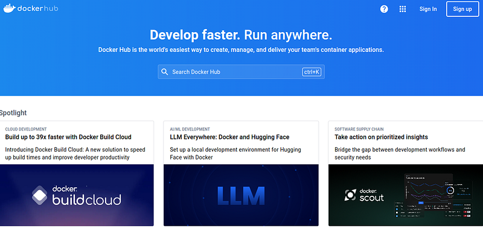

Docker has become an essential skill for advanced development. It is almost as common as Git.
Like version control, developer teams use Docker in everyday tasks.
We save our project, upload a Docker copy of the app to a registry and voila, mass distribution with no dependency issues.
Docker is worth the hassle. Yea it can take months to learn and fully understand. But you will use this software tool in most to all advanced projects where scalability or dependencies are needed.
Once it is learned it is not hard, like Git you just have to overcome that initially learning curve.
And what is nuts, a lot of other technologies depend on Docker. Kubernetes, scaling with AWS/Google Cloud/Azure, load balancers and so many other applications require you to know Docker before touching them.
But yes, this is a technology you generally learn as an intermediate or advanced developer.
If you want to know what the heck Docker is, read on!
How to practice Docker
The first and foremost way to learn Docker is through a Udemy course. I tried the various videos out there on YouTube but found them to be sub-par.
I bought a few Udemy courses, tried them out, then returned them to find which suited me best.
Here is the one I settled on in the end:

What is cool, the instructor Maximilian Scharzmuller is a great teacher. He has been updating this course every few months, keeping it to the latest.
You can use this course as an encyclopedic reference after finishing as well. Highly recommend.
Outside a Udemy course I recommend packing all your applications into Docker and publishing them on Docker Hub.
Docker Hub stores all public images online, just like GitHub. I recommend you purposefully use existing images whenever you try a new project.
Projects, applications and dependencies are called images.
Develop with Docker
For example, if you download a website as source code, it likely will have online Docker images integrated. Use it.
Try to run the application in Docker as you develop the app. You won't even have to install any dependencies. It is all automatically downloaded from Docker Hub.
Configuration files in Docker look like this:
# Downloads Node from DockerHub FROM node:14 WORKDIR /usr/src/app COPY package*.json ./ RUN npm install COPY . . EXPOSE 3000 CMD ["node", "index.js"]
At the very top of all configuration files we place our online images. These are whole applications. From Docker Hub, here we download Node 14 then setup an application for Node.
Pretty cool huh?
We even setup a working directory in the file. If we configure this right we can develop the source code without ever installing Node on our machine. Instead it is downloaded and pre-installed inside docker.
Have Docker installed, use an LLM to show you how to run the application in Docker as you code it.
This can be done by mapping directories into Docker. But yes, you can write code and have it run in Docker any way you like.
LLMs are great at teaching Docker
There is plenty of documentation on how to use Docker. Data science companies and individuals have scraped a lot of Docker material, making LLMs a great tutor.
As you go through a Udemy course you can ask your LLM questions on how concepts are used, commands used, and how all features come together.
Today I find myself asking my LLM to create Docker configuration files, commands and how to use all kinds of features.
So yes, you will benefit from asking an LLM questions.
You need drivers and proper installation
For more advanced development, like machine learning, or parallel computing, you will need to install drivers that hook into Docker.

For example, when I run a PyTorch project I have to ensure I installed the latest video card drivers for Docker.
Video cards come with Docker drivers. So make sure its in there before running parallel computing and machine learning.
If this seems overwhelming it is only like that at the beginning. After learning all these processes Docker saves time and puts you in a league of your own to other developers.
Why? Because you can actually work on their projects (they use Docker).
How does Docker work?
Docker can be thought of as a partial virtual machine. It is a machine within a machine.
When we start up Docker we place an entire inner operating system in our computer.
It is an operating system within an operating system.
This inner operating system is called the Docker Engine.
The Docker Engine can have multiple operating systems stacked on top of it. This is like a supervisor managing employees.
Well really, it is an API for your Linux, Mac or Windows machine. The Docker engine uses hooks into your OS for using your hardware. When the Docker container hooks into your hardware, it links inner operating systems to say, your video card.
What is insane about this process. Docker shares resources and existing dependencies across images. Docker shares all resources and the entire inner operating system does not repeat software.
These shared operating systems run applications within it. The entire goal of Docker is to never have to install dependencies and simply run an app using a virtual copy of an entire machine.
For example, if we run a website in Docker, inside our virtual copy we will have all our libraries, Node and operating system pre-installed and usable for us.
We never have to run "npm install" or have to install our databases on out local computer. It is all done within Docker.
These virtual copies of whole applications + operating system are the images.
That is the beauty and major selling point of Docker. It is hyper lightweight due to its sharing of inner operating system, resources and inner hooks. And you don't need to install dependencies yourself.
Everything is way more efficient than say Virtual Box.
Virtual machine vs Docker
Virtual box or other virtual software makes an entire copy of the firmware, operating system and entire machine for each image.
Docker shares all software and OS hooks between images. Just wow! Super cool!

Where as your computer will lag with 5 virtual machines, your computer won't even use a quarter of the processing power with 5 Docker images.
If you want power and efficiency you want Docker.
Docker's inner and outer network
Inside the Docker engine is an entire local network. Across all the virtual copies you use among your inner apps, you can configure a mini network connection among your applications.
You can also port forward the inner network outward to the public and link inner and outer applications for yourself.
There are many features of Docker like this that make scaling your application easy once you know how.
You have to use this network feature when you hook together a Node application and a database like say MySQL.
They use inner ports and ports forwarded to the internet. The previously mentioned Udemy course covers all this.
Portability
Because we can imagine Docker images as an inner operating system for our applications we know it is portable.
We can copy paste the source code and run it anywhere. How is this possible?
Docker Hub makes this possible. The Hub is a humongous repository of software placed in images..
Docker software in your machine has an internet API built inside it. This means, to even use Docker you need an internet connection. Bummer I know, but hey that is how it works.
Docker will download whole dependent images such as MySQL, Node, Java, React and run it on your machine.
You simply need to create a configuration file called a dockerfile. Docker reads it and downloads everything for you, running the app with automation.

It will take a minute to get adjusted to this automation but you will find it very efficient to never have to install software on your own.
Scalability in cloud and Kubernetes
Due to the nature of this connection with Docker Hub, you can use Docker wrappers, like Kubernetes or Cloud software to distribute virtual copies of your applications on a fleet of machines.
Each machine will behave the same because of the virtual nature of Docker. It will even be efficient.
Scalability is an advanced concept, but it highlights how to use Docker in production. Many software contractors use Docker this way to run entire enterprises on a load balancer and API.
Using these technologies you can distribute your visitor requests to multiple exact copies of your application.
Many job applications require Docker
This technology can be a selling point in your job hunting for sure.
I applied to over 1,500 jobs and saw many job descriptions on Software Engineering.
From my personal estimation recruiter descriptions use Docker 30-40% of the time.
Those positions ask for the basics. Teams use Docker as a part of development, not always scaling.
You will benefit from learning Docker and I hope you are inspired to do so.
Anywho, I hope you learned something...
CTA: Check out my book on learning code
Happy coding!
Resources
How an advanced developer looks: What It Really Means to Be an Advanced Developer
Why LLMs are so helpful: Why programming with a language model rocks!